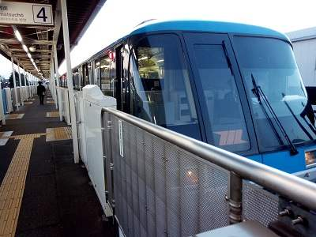
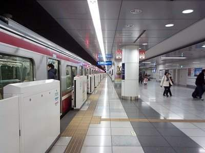

How to buy a train/monorail ticket and get to the city center
Overview
There are four ways to travel from Haneda Airport:
Keikyu train
Tokyo Monorail
coach bus
taxi
By Monorail

Tokyo Monorail connects between Haneda Airport and Hamamatsucho station of Yamanote Line (circle line in central Tokyo).
"Daimon" station of Toei Asakusa subway line is right next to Hamamatsucho station. You will have an interesting view from the monorail. The price for travel between Hamamatsucho and Haneda airport is 490 yen as of January 2016. The travel from Haneda Airport International Terminal to Hamamatsucho takes 14 minutes or more, depending on the type of train:
Haneda Express (13 minutes, non-stop)
Rapid (15 minutes, 3 stops)
Local (18 minutes, 6 stops)
You can ride any of them with base fare.
Hamamatsucho is the last stop, so you can't miss it.

Taking a train from Haneda is easy. Keikyu is the only train operator to Haneda Airport. The train has two stations at the airport, so you can walk easily to the train station from any terminal - Domestic I, II, or International.
Direct trains operate towards Shinagawa, Yokohama, Asakusa and Narita Airport. Every train, in either directinon, stops at Kamata station.
From Kamata, some trains go in the direction of Shinagawa and Asakusa, and others go in the direction of Kawasaki, Yokohama and Yokosuka.
A train to Shinagawa takes 14 minutes, 410 yen.
A train to Yokohama takes 27 minutes, 480 yen.
A train to Asakusa takes 44 minutes, 660 yen.
Trains are classified as follows:
Local (Kakueki-Teisha, Kakutei)
Express (Kyuko)
Airport Express (Airport Kyuko)
Limited Express (Tokkyu)
Rapid Limited Express (Kaitoku)
Airport Rapid Limited Express (Airport Kaitoku)
You can ride any of above with base fare.
The difference among the above is mostly about the number of stops - For local trains there are many stops! You can buy a PASMO (prepaid IC card) from a ticket machine and ride a Keikyu train or Monorail with that card.